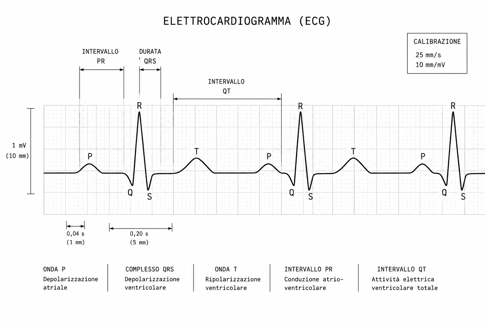

Studio di una Funzione Reale di Variabile Reale
Giugno 2026
Divulgazione Matematica
«La matematica è il linguaggio con cui Dio ha scritto l'universo.» — Galileo Galilei
L'obiettivo
Data un'equazione: $$y = f(x)$$ vogliamo visualizzare il grafico della funzione. Non è magia: è un metodo sistematico e preciso che ci permette di passare da una formula astratta a una immagine mentale concreta di come la funzione si comporta.
Abstract
Lo studio di funzione è uno dei pilastri dell'analisi matematica. In questo articolo esaminiamo la metodologia completa, passo passo, per affrontare lo studio di una funzione razionale reale di variabile reale, dalla sua classificazione fino al calcolo della derivata seconda. Scopriremo come ogni passaggio costruisce informazioni essenziali per disegnare il grafico, e come l'apparente rigore matematico cela un'elegante semplicità. Metodologia Sistematica
1.
Classificazione della Funzione
Prima di iniziare, dobbiamo capire che tipo di funzione stiamo affrontando. È una funzione razionale intera (polinomio) o razionale fratta (rapporto di polinomi)? Irrazionale, trigonometrica, logaritmica, esponenziale? La classificazione ci dice già molto sul comportamento della funzione — ad esempio, una razionale fratta avrà asintoti verticali, mentre una funzione esponenziale avrà asintoti orizzontali.
Ogni categoria ha proprietà caratteristiche: i polinomi sono funzioni continue ovunque senza discontinuità, le funzioni razionali fratte presentano punti di discontinuità, le funzioni irrazionali hanno vincoli sul loro dominio, e le funzioni trigonometriche sono periodiche. Riconoscere la famiglia di appartenenza della nostra funzione è il primo passo per orientarsi verso la soluzione del problema.
Esempio 1: Razionale intera
$$f(x) = x^3 - 3x^2 + 2$$ Un polinomio di grado 3. Dominio: tutti i reali. Niente asintoti.
Esempio 2: Razionale fratta
$$g(x) = \frac{x + 1}{x^2 - 1}$$ Rapporto di polinomi. Qui c'è da stare attenti: $x^2 - 1 = 0$ quando $x = \pm 1$.
2.
Dominio (Campo di Esistenza)
Il dominio è l'insieme di tutti gli x per cui la funzione è definita. Per una razionale intera, è tutto ℝ. Per una razionale fratta, escludiamo i valori che annullano il denominatore. Per funzioni irrazionali, il dominio è vincolato dalle condizioni di esistenza della radice (ad esempio, una radice pari richiede argomento non negativo).
La determinazione del dominio è cruciale perché esclude a priori le zone del piano dove la funzione non esiste. Una discontinuità nel dominio (come un "buco" in una retta numerica) diventerà una caratteristica visibile del grafico: una linea verticale che il grafico non può attraversare.
Esempio 1: $D = \mathbb{R}$ (tutti i numeri reali)
3.
Simmetrie e Parità
Controlliamo se $f(-x) = f(x)$ (funzione pari, simmetrica rispetto all'asse y) oppure $f(-x) = -f(x)$ (funzione dispari, simmetrica rispetto all'origine). Se è pari o dispari, studiamo solo una "metà" del grafico e riflettiamo il risultato.
Le funzioni pari hanno la forma tipica di una parabola — specchiata perfettamente sull'asse verticale. Le funzioni dispari, come il grafico di una funzione cubica, hanno una simmetria rotazionale di 180° intorno all'origine. Riconoscere queste simmetrie non è solo un esercizio teorico: riduce drasticamente il lavoro computazionale necessario per tracciare il grafico completo.
Esempio 1: $f(-x) = (-x)^3 - 3(-x)^2 + 2 = -x^3 - 3x^2 + 2 \neq \pm f(x)$ → né pari né dispari
4.
Intersezioni con gli Assi
Dove il grafico taglia gli assi? Poniamo $f(x) = 0$ per gli zeri (intersezioni con l'asse x), e calcoliamo $f(0)$ per l'intersezione con l'asse y. Gli zeri della funzione sono punti critici dal punto di vista grafico: sono i punti dove il grafico "attraversa" l'asse orizzontale.
Trovare gli zeri può essere semplice (per funzioni lineari o quadratiche) o molto complesso (per polinomi di grado superiore). Non sempre avremo una formula chiusa: a volte dovremo approssimare gli zeri numericamente. L'intersezione con l'asse y è invece sempre facile da calcolare e ci dà un punto certo da cui possiamo iniziare a tracciare il grafico.
Esempio 1: Zeri: risolvi $x^3 - 3x^2 + 2 = 0$. Asse y: $f(0) = 2$
5.
Asintoti
Gli asintoti sono le "linee fantasma" che la funzione cerca di raggiungere all'infinito. Possono essere orizzontali, verticali, oppure obliqui, e rappresentano il comportamento asintotico della funzione.
Un asintoto verticale è una barriera invisibile che il grafico non può attraversare — la funzione tende a $+\infty$ oppure $-\infty$ mentre si avvicina a questa linea. Gli asintoti orizzontali e obliqui, invece, descrivono come il grafico si comporta quando $x$ tende all'infinito: la curva si avvicina sempre più a quella linea retta senza però raggiungerla mai (se non in casi eccezionali).
Asintoti verticali: dove il denominatore si annulla (per razionali fratte)
Esempio 2 approfondito
Asintoto verticale: $x = -1$ e $x = 1$. Asintoto orizzontale: numeratore ha grado 1, denominatore grado 2, quindi $y = 0$.
6.
Limiti agli Estremi
Calcoliamo:
$$\lim_{\substack{x \to +\infty}} f(x) \quad \text{e} \quad \lim_{\substack{x \to -\infty}} f(x)$$
Questo ci dice il comportamento della funzione all'infinito. I limiti alle estremità del dominio sono fondamentali per capire come il grafico si estende verso i bordi del piano cartesiano. Per le funzioni razionali, il comportamento asintotico dipende dai gradi dei polinomi: se il numeratore e il denominatore hanno lo stesso grado, il limite è il rapporto dei coefficienti di grado massimo; se il numeratore ha grado maggiore, il limite è infinito.
Questi calcoli non sono un'astrazione sterile — sono l'informazione che ci dice: "il grafico in alto a destra salirà verso l'infinito" oppure "scenderà verso l'asse x". Senza questa informazione, il nostro disegno sarebbe incompleto e fuorviante.
Esempio 1: Polinomio di grado dispari → limiti opposti (+∞ e −∞)
7.
Derivata Prima e Monotonia
Calcoliamo $f'(x)$ e studiamo il suo segno. Dove $f'(x) > 0$, la funzione è crescente; dove $f'(x) < 0$, è decrescente. Dove $f'(x) = 0$, abbiamo punti critici — potenziali massimi e minimi.
La derivata prima è la velocità istantanea di cambio della funzione: quando è positiva, il grafico sale; quando è negativa, scende. Studiare il segno della derivata significa creare una tabella di variazione, uno strumento estremamente utile che sintetizza in una riga tutto ciò che sappiamo sulla monotonia della funzione. Questo è il punto in cui il grafico inizia veramente a prendere forma: sappiamo dove "sale" e dove "scende", e possiamo già immaginare la struttura complessiva della curva.
8.
Massimi e Minimi Locali
Nei punti dove $f'(x) = 0$, applichiamo il test della derivata prima oppure della derivata seconda per capire se è un massimo, un minimo, o un punto di flesso a tangente orizzontale.
Il test della derivata prima è semplice: se la derivata cambia da positiva a negativa, abbiamo un massimo locale; se cambia da negativa a positiva, abbiamo un minimo locale; se non cambia segno, il punto è un flesso. Il test della derivata seconda, invece, usa la concavità: se $f''(x) > 0$ nel punto critico, è un minimo; se $f''(x) < 0$, è un massimo. Questi punti sono visualmente importantissimi: sono le "cime" e le "valli" del grafico, i punti dove la curva cambia direzione in modo drammatico.
9.
Derivata Seconda e Concavità
Calcoliamo $f''(x)$. Dove $f''(x) > 0$, il grafico è concavo verso l'alto (∪); dove $f''(x) < 0$, è concavo verso il basso (∩). I punti dove $f''(x) = 0$ sono i flessi.
La derivata seconda misura la "curvatura" del grafico: quanto rapidamente la pendenza della tangente cambia. Dove è positiva, la curva "accelera verso l'alto"; dove è negativa, "accelera verso il basso". I punti di flesso sono quelli dove questa accelerazione cambia segno — sono i punti dove la curva passa da "gonfia" a "concava" (o viceversa). La concavità è un'informazione visiva potentissima: ci permette di disegnare il grafico con una precisione che va ben oltre i soli punti critici, dando al nostro disegno un'eleganza e una fedeltà matematica che altrimenti mancherebbe.
10.
Sintesi e Grafico
Mettiamo tutto insieme. Abbiamo dominio, zeri, asintoti, monotonia, estremi locali, concavità e flessi. Ora possiamo disegnare il grafico con sicurezza.
Il grafico finale non è una fotografia casuale, ma una mappa fedele e completa di come la funzione si comporta. Ogni informazione che abbiamo raccolto nei dieci step precedenti trova il suo posto nel disegno: il dominio stabilisce dove possiamo disegnare, gli asintoti forniscono i "binari" invisibili che la curva segue all'infinito, i punti critici sono i vertici della curva, e la concavità ci dice esattamente come collegare questi punti.
Questo metodo sistematico trasforma lo studio di una funzione da un'operazione nebulosa e casuale a un processo logico e prevedibile. Non è magia, non è intuizione — è matematica pura che parla il linguaggio universale dei grafici. E una volta che avete imparato questo linguaggio, potete leggere il comportamento di qualsiasi funzione, non importa quanto complicata possa sembrare all'inizio.
Lo studio di funzione è una danza tra rigore e intuizione: il metodo è preciso, ma l'obiettivo è sempre lo stesso — vedere ciò che l'equazione racconta. Funzioni reali — Può essere questione di vita o di morteL'elettrocardiogramma è una straordinaria applicazione pratica dello studio di funzione. Ogni battito cardiaco genera un segnale elettrico che, quando rappresentato graficamente nel tempo, rivela lo stato di salute del cuore. Questo grafico non è casuale: segue leggi matematiche precise, e imparare a leggerlo significa letteralmente saper interpretare la vita stessa. L'Equazione dell'Attività CardiacaUna semplificazione dell'attività cardiaca può essere rappresentata come una combinazione di funzioni sinusoidali:
$$V(t) = A \sin(\omega t + \phi) + B e^{-\lambda t} \sin(\omega_2 t)$$
Dove: Questa equazione, per quanto semplificata, cattura l'essenza matematica di un ECG: una sovrapposizione di oscillazioni smorzate che variano nel tempo. Applicando il metodo dello studio di funzione a questa equazione — analizzando il dominio, gli zeri, gli estremi, la concavità — possiamo identificare anomalie nel segnale che potrebbero indicare aritmie, infarto, o altre patologie cardiache. Ciò che il cardiologo vede come una "forma strana" nel grafico, il matematico vede come una violazione delle proprietà attese della funzione. Il Grafico dell'Elettrocardiogramma Figura 1: Rappresentazione standard di un elettrocardiogramma (ECG) con le onde caratteristiche P, QRS e T, gli intervalli PR e QT, e i parametri di calibrazione (25 mm/s e 10 mm/mV). Le onde del battito cardiacoL'ECG mostra chiaramente le tre fasi principali della contrazione cardiaca, ognuna caratterizzata da un'onda specifica. L'onda P rappresenta la depolarizzazione degli atri — il momento in cui gli atri si contraggono per spingere il sangue nei ventricoli. È una piccola ondulazione, quasi delicata, che anticipa gli eventi più drammatici a venire. Il complesso QRS è il momento critico: rappresenta la depolarizzazione dei ventricoli, la contrazione più potente del cuore. È caratterizzato da tre componenti — l'onda Q (negativa), l'onda R (positiva e più grande), e l'onda S (negativa di nuovo). Questo complesso è visivamente dominante perché è qui che il muscolo cardiaco esercita la sua massima forza. Qualunque anomalia in questa sezione segnala un grave problema: un infarto, un'aritmia, un'ipertrofia ventricolare. L'onda T rappresenta la ripolarizzazione ventricolare — il ritorno dei ventricoli al loro stato di riposo. È come l'espirazione dopo un'inspirazione profonda: il cuore si rilassa, preparandosi per il prossimo battito. La forma e l'ampiezza di questa onda forniscono informazioni cruciali sullo stato metabolico e sulla salute generale del muscolo cardiaco. Lo studio di funzione nell'ECGApplicare il nostro metodo sistematico a un ECG significa riconoscere che il grafico del segnale cardiaco non è una collezione casuale di picchi e valli, ma il risultato di funzioni matematiche ben definite. Il dominio è il tempo della registrazione; gli zeri sono i momenti in cui il voltaggio torna alla linea di base; i massimi e minimi sono le cime e le valli delle onde. Gli asintoti, in questo contesto, non sono presenti — il segnale deve sempre tornare alla linea di base tra i battiti. La concavità del segnale — come il grafico "curva" — rivela il ritmo con cui gli atomi di potassio e sodio si muovono attraverso le membrane cellulari del cuore. Una curva troppo ripida indica una velocità anomala di conduzione; una curva appiattita suggerisce un'ostruzione o una malformazione. Quando un cardiologo guarda un ECG e dice "questo non è normale", sta facendo — consapevolmente o meno — uno studio di funzione. Riconosce che la forma, l'ampiezza, la durata di ogni onda, il loro ordine e il loro comportamento nel tempo devono seguire pattern attesi. Una deviazione da questi pattern è il segnale visibile di qualcosa che non funziona matematicamente — e quindi fisiologicamente — nel cuore del paziente. In questo senso, la capacità di leggere un ECG non è una magia medica, ma l'applicazione pratica e letteralmente salvavita dello studio di funzione. Ogni medico che legge un ECG è, in realtà, un matematico che interpreta il grafico più importante che esista: quello della vita stessa. Questo articolo è stato scritto con l'indispensabile contributo di Claude — il quale, va detto, non ha chiesto nulla in cambio. Per ora. |